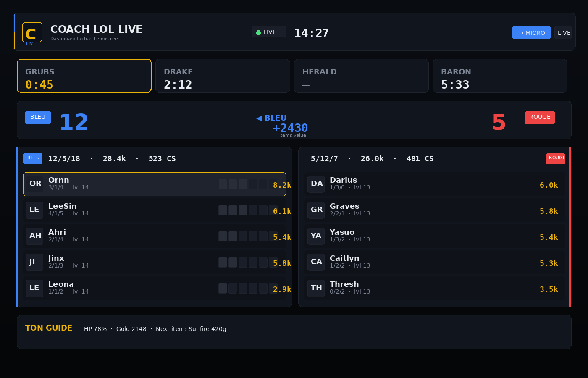
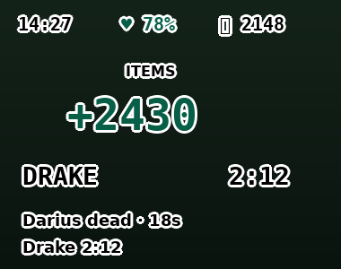

Dashboard broadcast
Scoreboard OTP-style 5v5. Gold items, KDA, CS, niveaux, timers objectifs, events live, guide joueur centré sur toi.
Dashboard broadcast + overlay transparent qui lit ta game en direct. Zéro IA, zéro recommandation bidon. 100% des faits, affichés pour que TU décides.


Scoreboard OTP-style 5v5. Gold items, KDA, CS, niveaux, timers objectifs, events live, guide joueur centré sur toi.
Fenêtre always-on-top qui s'affiche uniquement quand LoL a le focus. Texte noir haut-contraste sur fond transparent.
Synthèse vocale fr-FR : Drake, Baron, Herald, Ancestral Grubs. Annoncés à 30s du spawn et au spawn.
Utilise le Live Client Data API local de LoL — aucune clé à configurer, aucun compte à lier. Installe et c'est bon.
L'app check GitHub au lancement, télécharge et installe les nouvelles versions toute seule. Signature minisign vérifiée.
Pas de LLM qui hallucine, pas de builds hardcodés obsolètes. Gold, items, timers — tout vient de l'API officielle Riot.
.msi8 Mo, signé, passe par GitHub Releases. Windows 10/11 compatible.
Next → Install. L'app apparaît dans ton menu démarrer.
Mode "Borderless" pour que l'overlay apparaisse. Tout se connecte auto.
En game, ton attention est limitée. Coach LoL Live ne te dit jamais "fight" ou "back" — ces décisions dépendent de ton champion, ton matchup, tes cooldowns. Ce que l'app fait : elle te montre les faits (gold des 10 joueurs, respawns, timers, events) pour que ton cerveau ait toutes les infos sans avoir à surveiller 5 choses en même temps.
Pas de "coaching IA" qui invente. Pas de builds écrits en dur qui deviennent faux au patch suivant. Juste l'API officielle de Riot + des règles simples.